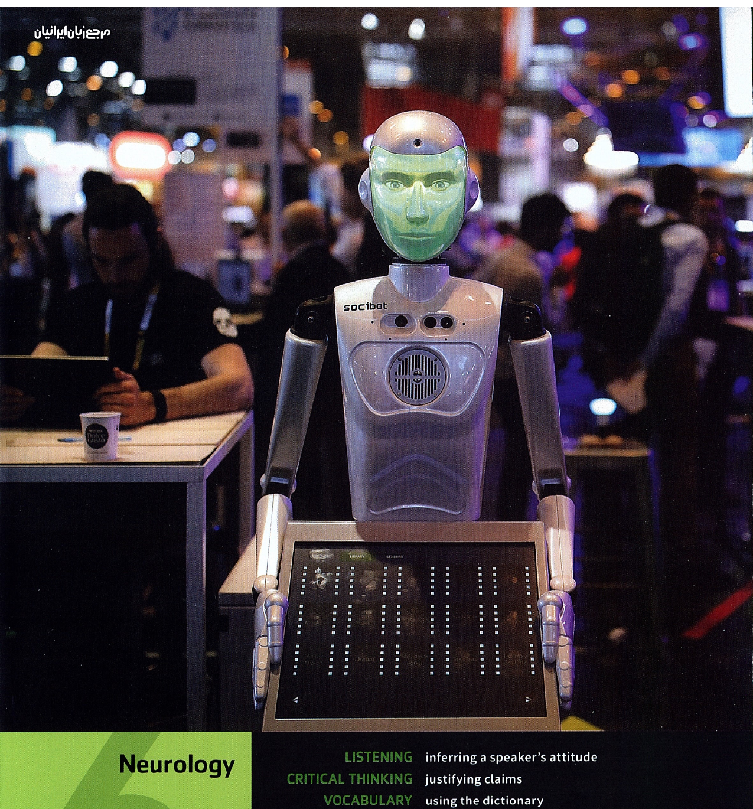
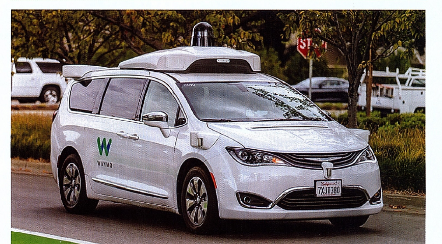

Q: Skills for Success 3, Listening & Speaking
Unit 6: Neurology (pp. 126–132)
Unit 6: Neurology (pp. 126–132)
?Warm-Up
Would You Trust AI to Do It for You?
Choose A, B, C, or D. There are no correct answers!
1. Write your homework essay
AAbsolutely. Why suffer?
BYes, but I’ll change a few things.
CI’ll ask AI for ideas, then write it myself.
DNo. I enjoy suffering.
2. Cook dinner for your family
AYes. What could possibly go wrong?
BYes, but I’ll check the recipe first.
COnly for simple food.
DNo. I value my family.
3. Look after your pet for a weekend
AOf course. AI can handle it.
BAI can tell me what to do, but I’ll do it.
CMaybe for feeding reminders.
DAbsolutely not. My cat would report me.
4. Plan your entire holiday
AYes. AI can book everything.
BYes, but I’ll check the important details.
CI’ll use AI for suggestions only.
DNo. I want to get lost naturally.
5. Cut your hair
AYes. AI can generate the perfect hairstyle.
BAI chooses the style; my hairdresser does the cutting.
CI’ll use AI for inspiration.
DNo. My hair and I have been through enough.
PAGE 126

Unit 6 · Neurology
| Listening | inferring a speaker’s attitude |
|---|---|
| Critical Thinking | justifying claims |
| Vocabulary | using the dictionary |
| Grammar | gerunds and infinitives as the objects of verbs |
| Pronunciation | stress on important words |
| Speaking | leading a group discussion |
| Note-Taking | building an outline to take notes on a discussion |
PAGE 127
?Unit Question
Will artificial intelligence ever be as smart as humans?
A. Discuss these questions with your classmates.
- What does “artificial intelligence” (AI) mean?
Sample answer: It means machines that seem to “think” because they process information. - Give some examples of things in your daily life that use AI.
Sample answer: Cell phones, computers, digital watches, cameras, cars, etc. - Look at the photo. What kind of machine is this? Where are the people?
Sample answer: The machine looks like a robot with an image for a human “face.” The humans are probably at a meeting or conference, maybe about technology.
B. Listen to The Q Classroom online. Then answer these questions.
- What does Yuna assume when she buys an electronic device? Do you ever do the same?
Sample answer: Yuna assumes that almost every electronic thing that she buys has some form of AI in it. - How does Felix feel about the use of AI in so many places?
Sample answer: Felix thinks too many things have AI in them. - How does Sophy feel about electronic devices? Do you feel the same or differently? Explain.
Sample answer: Sophy would prefer to have simple things.
Unit ObjectiveListen to a radio interview and an excerpt from a college class discussion. Gather information and ideas to state and explain your opinions in a group discussion about research into artificial intelligence.
PAGE 128
Listening 1 · What Kind of “Smart” Is AI?
Objective
You are going to listen to a radio interview with two experts in artificial intelligence. As you listen to the interview, gather information and ideas about whether AI will ever be as smart as humans.
You are going to listen to a radio interview with two experts in artificial intelligence. As you listen to the interview, gather information and ideas about whether AI will ever be as smart as humans.

Preview the Listening
A. Preview The interviewer’s first question is, “So, are machines now as smart as we are?” What do you think? Discuss your ideas with a partner. Take notes on your discussion.
Sample answer: I don’t think machines are as smart as humans yet. They can process a lot of information quickly, but they can’t use judgment or common sense the way people do.
B. Vocabulary Read aloud these words from Listening 1. Check (✓) the ones you know. Use a dictionary to define any new or unknown words. Then discuss with a partner how the words will relate to the unit.
Click any word below to see its definition and the sentence where it appears in the listening.
automated (adj.)
layer (n.)
reject (v.)
clever (adj.)
obvious (adj.)
stand by (v. phr.)
fair (adj.)
predictable (adj.)
take over (v. phr.)
figure out (v. phr.)
Useful chunks from the listening
These expressions aren’t in the printed word list, but they’re useful for understanding the interview.
go out on a limb (v. phr.)
gazillions (n.)
point taken (n. phr.)
PAGE 129
A. Listen and Take Notes Listen to the radio interview. As you listen, complete the notes.
Concerns about using robots
AI = artificial intelligence▶ 0:14
- VanDyke: Is AI smarter? depends on what we mean by smart▶ 1:02
- Ngoma: Old tasks (e.g., moon landings and remembering phone numbers▶ 1:15) isn’t being “smart”
Some jobs AI might take over soon:
- driving trucks▶ 1:58 —10 years
- writing novels▶ 2:08 —30 years
- performing surgery▶ 2:11 —40 years
Why?
- most jobs are routine▶ 2:47
- people eventually accept machines—e.g., laser surgery▶ 3:04
- machines do jobs better, more cheaply
AI Trucks:
- suitable because truck driving mostly predictable▶ 4:08
- BUT: First and last mile(s)▶ 4:10 need humans because they contain unpredictable things▶ 4:25
- Two layers of information for AI trucks:
- GPS▶ 4:52 system
- sets of sensors▶ 5:02
- Two layers of information for AI trucks:
AI Hacking:
- Some targets:
- electric power▶ 5:54 system
- banking▶ 5:57 system
- Ngoma: Dangerous but many experts working on security▶ 6:13
PAGE 130
B. Categorize Read the statements. Write T (true) or F (false) according to what the interviewer and his two guests say. Then correct each false statement to make it true.
- Machines can make wise decisions, just as humans can. F — The speakers say machines are not wise and that humans are better at managing “messy” (complex) situations.
- Experts predict that AI will take over medical surgery before it takes over writing a novel. F — They predict that AI will create novels in 30 years and perform surgery in 40 years.
- Most laser eye surgery is now automated. T
- Driving a car around town is less predictable than driving a truck on the highway. T
- An AI-controlled truck is a kind of robot. T
- AI trucks have more trouble with GPS systems than with their sensors. F — The speaker says most problems with AI-driven vehicles involve the sensors.
C. Identify Read the sentences. Then listen again. Circle the answer that best completes each statement.
- Dr. Ngoma says that most people no longer consider ___ a sign that AI is smart.
a. storing a lot of information b. choosing how to use information - Dr. VanDyke implies that AI might take over jobs ___ than experts predict.
a. more quickly b. more slowly - Dr. VanDyke suggests that 30 years ago people did not ___.
a. believe they could get eye surgery b. consider automated eye surgery safe - Dr. Ngoma says that for the first and last mile of a truck trip, ___.
a. humans should drive the trucks b. city streets should be redesigned - The interviewer says many people are worried that criminals will use AI to ___.
a. steal trucks and cause accidents b. damage basic systems that keep society running
PAGE 131
D. Vocabulary Use the new vocabulary from Listening 1. Complete each sentence with the correct word or phrase.
automated (adj.) · clever (adj.) · fair (adj.) · figure out (v. phr.) · layer (n.) · obvious (adj.) · predictable (adj.) · reject (v.) · stand by (v. phr.) · take over (v. phr.)
- Each window is made of three layers: one of glass, one of clear plastic, and another of glass.
- The judge made a(n) fair decision about dividing up the money. Each person got an equal share.
- I washed my car at a(n) automated car wash because it’s faster than washing it by hand.
- After the team fell behind by five goals, it was obvious that they were going to lose.
- The owners of this company don’t run it well. I wish some larger company would take over the operation.
- The movie had a very predictable plot: Two people fall in love, they have a fight, and then in the end, they get back together. I knew that would happen.
- Dolphins are known to be very clever animals. They’ve even been seen using tools!
- Todd has never run this machine before. I think I will stand by just in case he needs help.
- Young people may reject traditions and then, when they get older, return to the old ways.
- You never told me you were planning to quit, but it wasn’t difficult to figure out from the way you were acting.
PAGE 132
?Say What You Think
Discuss Discuss the questions in a group.
- Are some AI systems truly smart? After hearing the interview about AI, what do you think?
Sample answer: I still don’t think AI systems are really smart. They can do a lot of things, but they seem easily confused. - If AI systems take over a lot of jobs from humans, will that be a good thing?
Sample answer: No. We have enough trouble finding jobs for people already. If a human can do a job perfectly well, a human should do it.